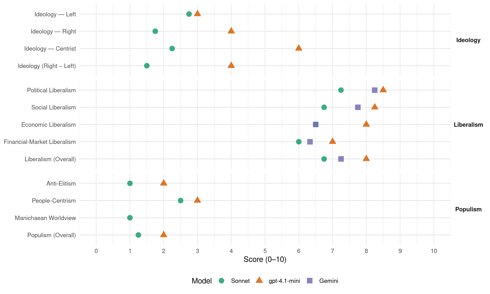

CSV/PCS (Luxembourg, 2004)
manifesto_id 23520_200406
Get full text: This site shows derived annotations and short verbatim quotes only. The full manifesto text is © Manifesto Project / WZB — obtain it via manifesto-project.wzb.eu using the manifesto_id above.
Headline scores
| Dimension | Sonnet | gpt-4.1-mini | Gemini |
|---|---|---|---|
| Populism (Overall) | 1.2 | 2.0 | – |
| Anti-Elitism | 1.0 | 2.0 | – |
| People-Centrism | 2.5 | 3.0 | – |
| Manichaean Worldview | 1.0 | – | – |
| Ideology (Right − Left) | 1.5 | 4.0 | – |
| Liberalism (Overall) | 6.8 | 8.0 | 7.2 |
| Political Liberalism | 7.2 | 8.5 | 8.2 |
| Social Liberalism | 6.8 | 8.2 | 7.8 |
| Economic Liberalism | 6.5 | 8.0 | 6.5 |
| Financial-Market Liberalism | 6.0 | 7.0 | 6.3 |
Evidence per dimension
Economic Liberalism
Gemini · score 8.0 · verified · chunk 1
“Markt und Wettbewerb sind zentrale Elemente”
Wir sehen in der sozialen Marktwirtschaft die Verbindung von Effizienz, Leistung und sozialem Ausgleich. Markt und Wettbewerb sind zentrale Elemente unserer Wirtschaftsordnung. Die soziale Marktwirtschaft
Gemini · score 5.0 · verified · chunk 2
“sozialen Marktwirtschaft, wo der Staat die”
Die CSV bekennt sich klar zu einer sozialen Marktwirtschaft, wo der Staat die korrigierende Hand darstellt.
Gemini · score 7.0 · verified · chunk 3
“Marktwirtschaft, die sowohl sozial als auch ökologisch ist”
Wir treten ein für eine Marktwirtschaft, die sowohl sozial als auch ökologisch ist. Wir treten ein für eine nachhaltige
Gemini · score 6.0 · verified · chunk 4
“internationale soziale Marktwirtschaft”
Zivilgesellschaft fördern. Die CSV tritt nämlich für eine internationale soziale Marktwirtschaft ein. Dazu gehören internationale Banken- und Börsenaufsichtregeln
gpt-4.1-mini · score 9.0 · verified · chunk 1
“Markt und Wettbewerb sind zentrale Elemente unserer Wirtschaftsordnung.”
Wir sehen in der sozialen Marktwirtschaft die Verbindung von Effizienz, Leistung und sozialem Ausgleich. Markt und Wettbewerb sind zentrale Elemente unserer Wirtschaftsordnung.
gpt-4.1-mini · score 7.0 · verified · chunk 2
“Die CSV bekennt sich klar zu einer sozialen Marktwirtschaft, wo der Staat die korrigierende Hand darstellt.”
Die CSV bekennt sich klar zu einer sozialen Marktwirtschaft, wo der Staat die korrigierende Hand darstellt. In diesem Sinne will die CSV im Bereich der Demokratisierung der Wirtschaft weitere Schritte unternehmen. Im Konkreten heißt dies, dass die Gesetze betreffend die Ausschüsse in den Betrieben, die Mitbestimmung sowie die Vertretung der Arbeitnehmerschaft in den Verwaltungsräten der Gesellschaften reformiert werden.
gpt-4.1-mini · score 8.0 · verified · chunk 3
“Wir treten ein für eine Marktwirtschaft, die sowohl sozial als auch ökologisch ist”
De séchere Wee heescht … e Wuesstem schafen, deen d’Liewensqualitéit nohalteg ofséchert Wir treten ein für eine Marktwirtschaft, die sowohl sozial als auch ökologisch ist. Wir treten ein für eine nachhaltige Marktwirtschaft, die auch den nachfolgenden Generationen eine intakte Natur und eine gesunde Umwelt überlässt.
gpt-4.1-mini · score 8.0 · verified · chunk 4
“Die CSV tritt nämlich für eine internationale soziale Marktwirtschaft ein.”
Die CSV setzt sich ein für eine verstärkte Kooperation an den Anti- Menschenhandelsmissionen und eine enge Zusammenarbeit bei der Bekämpfung von organisierter Kriminalität. Wir setzen uns in unserem Zeitalter der Globalisierung für eine globale Rechts- und Friedensordnung ein sowie die Beobachtung von internationaler Frauenpolitik in der Weltpolitischen Entwicklung. Die Frauenpolitik auf nationaler Ebene steht nämlich in einem komplexen Wechselverhältnis zu der internationalen Frauenpolitik. Beispiele dafür sind die zahlreichen UNO-Organisationen, Frauen NGOs, internationale Konventionen wie CEDAW zur Beseitigung von Frauendiskriminierung und UN-Weltkonferenzen. Es wird Zeit den Welthandel auch national zu thematisieren und die Bevölkerung mit den Herausforderungen und Potenzialitäten eines gerechten weltweiten Handels vertraut zu machen. Die dafür zuständige Welthandelsorganisation (WTO) hat sich in der Vergangenheit durch veraltete, untransparente und starre Verhandlungsmechanismen ausgezeichnet. Die CSV wird sich dafür einsetzen die Reformen innerhalb der Welthandelsorganisation voranzutreiben. Die WTO muss vor allem transparenter und demokratischer werden. Deshalb müssen die nationalen Parlamente stärker in die Entscheidungsfindung eingebunden werden. Eine allgemeine Reorganisation der WTO muss transparentere Verfahren vorsehen, den Dialog zwischen den Regierungsunterhändlern, den Parlamentsvertretern und den Repräsentanten der Zivilgesellschaft fördern. Die CSV tritt nämlich für eine internationale soziale Marktwirtschaft ein.
Sonnet · score 8.0 · verified · chunk 1
“Markt und Wettbewerb sind zentrale Elemente”
Wir sehen in der sozialen Marktwirtschaft die Verbindung von Effizienz, Leistung und sozialem Ausgleich. Markt und Wettbewerb sind zentrale Elemente unserer Wirtschaftsordnung.
Sonnet · score 6.0 · verified · chunk 2
“Wettbewerbsfähigkeit unserer Lohnnebenkosten nicht beeinträchtigen”
Ein hoher Anteil des Staates bei der Finanzierung der Sozialversicherung erlaubt vergleichsweise niedrige Beitragssätze, welche die Wettbewerbsfähigkeit der Lohnnebenkosten nicht beeinträchtigen.
Sonnet · score 6.0 · verified · chunk 3
“Wir treten ein für eine Marktwirtschaft”
Wir treten ein für eine Marktwirtschaft, die sowohl sozial als auch ökologisch ist. Wir treten ein für eine nachhaltige Marktwirtschaft
Sonnet · score 6.0 · verified · chunk 4
“Reformen innerhalb der Welthandelsorganisation voranzutreiben”
Die CSV wird sich dafür einsetzen die Reformen innerhalb der Welthandelsorganisation voranzutreiben. Die WTO muss vor allem transparenter und demokratischer werden.
Financial-Market Liberalism
Gemini · score 8.0 · verified · chunk 1
“D’Finanzplaz laangfristeg sécheren, der Finanzplaz en neit Gesiicht ginn”
1.1.3. Fuerschung als Motor vun eiser Entwécklung 15 1.1.4. D’Finanzplaz laangfristeg sécheren, der Finanzplaz en neit Gesiicht ginn 16 1.1.5. Mëttelstandspolitik fir eng Kultur vu Betriebsgeescht
Gemini · score 6.0 · verified · chunk 3
“Immobilienanlagefonds (SICAV immobilière) gefördert werden”
Um Kleinsparer für die Anlage ihrer Ersparnisse in Mietwohnungen zu interessieren, müssen die Immobilienanlagefonds (SICAV immobilière) gefördert werden. Dies kann durch einen steuerlichen
Gemini · score 5.0 · verified · chunk 4
“internationale Banken- und Börsenaufsichtregeln”
soziale Marktwirtschaft ein. Dazu gehören internationale Banken- und Börsenaufsichtregeln, eine gerechte Arbeitsteilung zwischen den reichen Industrieländern
gpt-4.1-mini · score 8.0 · verified · chunk 1
“Finanzplatz Luxemburg hat sich über Jahrzehnte zu einem der führenden Finanzzentren”
Der Finanzplatz Luxemburg hat sich über Jahrzehnte zu einem der führenden Finanzzentren unseres Kontinents entwickelt. Seine Wichtigkeit für die staatlichen Einnahmen Luxemburgs, genau so wie für die stetige Schaffung von qualifizierten Arbeitsplätzen, braucht nicht mehr unter Beweis gestellt zu werden.
gpt-4.1-mini · score 6.0 · verified · chunk 2
“Wir wollen im Rahmen der Vermögensbildung sowie der Kapitalbeteiligung in Arbeitnehmerhand erste gesetzgeberische Schritte unternehmen.”
Nach Anhören der Sozialpartner will die CSV im Bereich der Vermögensbildung sowie der Kapitalbeteiligung in Arbeitnehmerhand erste gesetzgeberische Schritte unternehmen. Im Sinne der Chancengleichheit setzen wir uns ein für: die praktische Herstellung des Prinzips „gleicher Lohn für gleiche Arbeit“ die Aufrechterhaltung der „actions positives“, um das weniger begünstigte Geschlecht weiter zu fördern die konsequente Umsetzung der „plans à l’égalité“ in den Betrieben.
gpt-4.1-mini · score 7.0 · verified · chunk 4
“internationale Banken- und Börsenaufsichtregeln”
Die CSV tritt nämlich für eine internationale soziale Marktwirtschaft ein. Dazu gehören internationale Banken- und Börsenaufsichtregeln, eine gerechte Arbeitsteilung zwischen den reichen Industrieländern und den Staaten der Dritten Welt, ein stärkere Dialog zwischen den internationalen Finanz- und Handelsinstitutionen (Weltbank, IWF und WTO) und anderen Institutionen.
Sonnet · score 8.0 · verified · chunk 1
“Finanzplatz Luxemburg draußen in der Welt”
dafür gesorgt haben, dass der Finanzplatz Luxemburg draußen in der Welt den Namen trägt, der ihm zusteht. Wir haben Vertrauen in die zukünftigen Entwicklungskapazitäten
Sonnet · score 5.0 · verified · chunk 2
“steuerlich zu begünstigen und die Anrechte der Versicherten”
Die Aufgabe der Allgemeinheit besteht darin, solche Zusatzversicherungen steuerlich zu begünstigen und die Anrechte der Versicherten durch geeignete Maßnahmen abzusichern.
Sonnet · score 6.0 · verified · chunk 3
“Liberalisierung der Energiemärkte intensiv geführt”
Die Diskussion über die zukünftige Energieversorgung wird angesichts der Liberalisierung der Energiemärkte intensiv geführt. Dabei steht sehr oft die Frage im Mittelpunkt
Sonnet · score 5.0 · verified · chunk 4
“internationale Banken- und Börsenaufsichtregeln”
Die CSV tritt nämlich für eine internationale soziale Marktwirtschaft ein. Dazu gehören internationale Banken- und Börsenaufsichtregeln, eine gerechte Arbeitsteilung zwischen den reichen Industrieländern und den Staaten der Dritten Welt
Political Liberalism
Gemini · score 8.0 · verified · chunk 1
“eine wirksame und unabhängige Verwaltung”
Matsproocherechter schafen a Sécherheet garantéieren 4.1. Méi Matsproocherecht – fir méi vun äis 112 4.2. Eng efficace an onofhängeg Verwaltung 115 4.3. Recht a Gerechtegkeet
Gemini · score 8.0 · verified · chunk 2
“Anerkennung unserer Rechtsstaatlichkeit und die Einhaltung”
Voraussetzung ist allerdings die Anerkennung unserer Rechtsstaatlichkeit und die Einhaltung unserer Gesetze sowie der gesellschaftlichen Gebräuche
Gemini · score 8.0 · verified · chunk 3
“gewaltenteilenden Rechtsstaat und zur Unabhängigkeit der Gerichtsbarkeit”
Wir bekennen uns zum gewaltenteilenden Rechtsstaat und zur Unabhängigkeit der Gerichtsbarkeit. Wir wollen die alternative Konfliktlösung
Gemini · score 9.0 · verified · chunk 4
“gewaltenteilenden Rechtsstaat und zur Unabhängigkeit der Gerichtsbarkeit”
4.3. Recht a Gerechtegkeet Wir bekennen uns zum gewaltenteilenden Rechtsstaat und zur Unabhängigkeit der Gerichtsbarkeit. Wir wollen die alternative Konfliktlösung
gpt-4.1-mini · score 8.0 · verified · chunk 1
“Demokratie, Rechte, Wahlen, Gerichte, Medien”
Die CSV bekennt sich zum Recht und zur Pflicht auf Arbeit. Arbeit ist Ausdruck der Würde des Menschen. Sie erlaubt ihm, sich persönlich zu entfalten und seinen Beitrag zur Gestaltung der Gesellschaft zu leisten.
gpt-4.1-mini · score 8.0 · verified · chunk 2
“Wir wollen eine Schule, in der jeder Einzelne zählt, in der er seine Talente, Kompetenzen und Kreativität entwickeln kann.”
Bildung ist der Schlüssel für Wohlstand und soziale Gerechtigkeit. Sie ist die Voraussetzung für persönliche Selbstbestimmung, für Mitwirkung und Gemeinwohl. Sie ist der Motor der Demokratie, der Kultur, der Wirtschaft und Arbeitswelt. Bildung und Erziehung eröffnen dem Menschen Chancen für persönlichkeitsgerechte Selbstentfaltung und Verantwortung in der Gemeinschaft. Sie eröffnen ihm Berufswege, gesellschaftlichen Aufstieg und sozialen Ausgleich. Sie ermöglichen Orientierung, Urteilskraft und Verantwortungsbewusstsein. Wir wollen daher ein Bildungssystem, das Leistung fördert und Schlüsselkompetenzen vermittelt. Wir wollen eine Schule, in der jeder Einzelne zählt, in der er seine Talente, Kompetenzen und Kreativität entwickeln kann.
gpt-4.1-mini · score 9.0 · verified · chunk 3
“Wir wollen die individuellen und kollektiven Grundrechte schützen”
Wir wollen die individuellen und kollektiven Grundrechte schützen. Wir wollen die freie Meinungsbildung garantieren. Wir wollen stabile Institutionen und bürgernahe öffentliche Verwaltungen.
gpt-4.1-mini · score 9.0 · verified · chunk 4
“Wir bekennen uns zum gewaltenteilenden Rechtsstaat und zur Unabhängigkeit der Gerichtsbarkeit.”
4.3. Recht a Gerechtegkeet Wir bekennen uns zum gewaltenteilenden Rechtsstaat und zur Unabhängigkeit der Gerichtsbarkeit. Wir wollen die alternative Konfliktlösung (Mediation und Vermittelung sowie Schiedsgerichtsbarkeit) fördern. Unser Rechtswesen, sowie die anderen Institutionen auch, muss durch die Effizienz und Nachvollziehbarkeit seiner Grundlagen und seines Wirkens das Vertrauen der Bürger rechtfertigen.
Sonnet · score 6.0 · verified · chunk 1
“Matsproocherechter schafen a Sécherheet garantéieren”
4. … Matsproocherechter schafen a Sécherheet garantéieren 4.1. Méi Matsproocherecht – fir méi vun äis
Sonnet · score 7.0 · verified · chunk 2
“Bildung ist der Schlüssel für Wohlstand und soziale Gerechtigkeit”
Bildung ist der Schlüssel für Wohlstand und soziale Gerechtigkeit. Sie ist die Voraussetzung für persönliche Selbstbestimmung, für Mitwirkung und Gemeinwohl. Sie ist der Motor der Demokratie
Sonnet · score 8.0 · verified · chunk 3
“Demokratie ist die politische Ordnung”
Demokratie ist die politische Ordnung, in der Menschenwürde, Fortschritt in Frieden und Freiheit, Gleichheit, Partnerschaft und Mitbestimmung am besten gewährleistet werden können
Sonnet · score 8.0 · verified · chunk 4
“gewaltenteilenden Rechtsstaat und zur Unabhängigkeit der Gerichtsbarkeit”
Wir bekennen uns zum gewaltenteilenden Rechtsstaat und zur Unabhängigkeit der Gerichtsbarkeit. Wir wollen die alternative Konfliktlösung (Mediation und Vermittelung sowie Schiedsgerichtsbarkeit) fördern.
Liberalism (Overall)
Gemini · score 8.0 · verified · chunk 1
“Markt und Wettbewerb sind zentrale Elemente”
Wir sehen in der sozialen Marktwirtschaft die Verbindung von Effizienz, Leistung und sozialem Ausgleich. Markt und Wettbewerb sind zentrale Elemente unserer Wirtschaftsordnung. Die soziale Marktwirtschaft
Gemini · score 7.0 · verified · chunk 2
“Anerkennung unserer Rechtsstaatlichkeit und die Einhaltung”
Voraussetzung ist allerdings die Anerkennung unserer Rechtsstaatlichkeit und die Einhaltung unserer Gesetze sowie der gesellschaftlichen Gebräuche
Gemini · score 7.0 · verified · chunk 3
“gewaltenteilenden Rechtsstaat und zur Unabhängigkeit der Gerichtsbarkeit”
Wir bekennen uns zum gewaltenteilenden Rechtsstaat und zur Unabhängigkeit der Gerichtsbarkeit. Wir wollen die alternative Konfliktlösung
Gemini · score 7.0 · verified · chunk 4
“gewaltenteilenden Rechtsstaat und zur Unabhängigkeit der Gerichtsbarkeit”
4.3. Recht a Gerechtegkeet Wir bekennen uns zum gewaltenteilenden Rechtsstaat und zur Unabhängigkeit der Gerichtsbarkeit. Wir wollen die alternative Konfliktlösung
gpt-4.1-mini · score 8.0 · verified · chunk 1
“Markt und Wettbewerb sind zentrale Elemente unserer Wirtschaftsordnung.”
Wir sehen in der sozialen Marktwirtschaft die Verbindung von Effizienz, Leistung und sozialem Ausgleich. Markt und Wettbewerb sind zentrale Elemente unserer Wirtschaftsordnung.
gpt-4.1-mini · score 7.0 · verified · chunk 2
“Wir wollen eine Schule, in der jeder Einzelne zählt, in der er seine Talente, Kompetenzen und Kreativität entwickeln kann.”
Bildung ist der Schlüssel für Wohlstand und soziale Gerechtigkeit. Sie ist die Voraussetzung für persönliche Selbstbestimmung, für Mitwirkung und Gemeinwohl. Sie ist der Motor der Demokratie, der Kultur, der Wirtschaft und Arbeitswelt. Bildung und Erziehung eröffnen dem Menschen Chancen für persönlichkeitsgerechte Selbstentfaltung und Verantwortung in der Gemeinschaft. Sie eröffnen ihm Berufswege, gesellschaftlichen Aufstieg und sozialen Ausgleich. Sie ermöglichen Orientierung, Urteilskraft und Verantwortungsbewusstsein. Wir wollen daher ein Bildungssystem, das Leistung fördert und Schlüsselkompetenzen vermittelt. Wir wollen eine Schule, in der jeder Einzelne zählt, in der er seine Talente, Kompetenzen und Kreativität entwickeln kann.
gpt-4.1-mini · score 9.0 · verified · chunk 3
“Wir wollen die individuellen und kollektiven Grundrechte schützen”
Wir wollen die individuellen und kollektiven Grundrechte schützen. Wir wollen die freie Meinungsbildung garantieren. Wir wollen stabile Institutionen und bürgernahe öffentliche Verwaltungen.
gpt-4.1-mini · score 8.0 · verified · chunk 4
“Die CSV tritt nämlich für eine internationale soziale Marktwirtschaft ein.”
Die CSV tritt nämlich für eine internationale soziale Marktwirtschaft ein. Dazu gehören internationale Banken- und Börsenaufsichtregeln, eine gerechte Arbeitsteilung zwischen den reichen Industrieländern und den Staaten der Dritten Welt, ein stärkere Dialog zwischen den internationalen Finanz- und Handelsinstitutionen (Weltbank, IWF und WTO) und anderen Institutionen.
Sonnet · score 7.0 · verified · chunk 1
“sozialen Marktwirtschaft die Verbindung von Effizienz”
Wir sehen in der sozialen Marktwirtschaft die Verbindung von Effizienz, Leistung und sozialem Ausgleich. Markt und Wettbewerb sind zentrale Elemente unserer Wirtschaftsordnung.
Sonnet · score 6.0 · verified · chunk 2
“bekennt sich klar zu einer sozialen Marktwirtschaft”
Die CSV bekennt sich klar zu einer sozialen Marktwirtschaft, wo der Staat die korrigierende Hand darstellt.
Sonnet · score 7.0 · verified · chunk 3
“Demokratie ist die politische Ordnung”
Demokratie ist die politische Ordnung, in der Menschenwürde, Fortschritt in Frieden und Freiheit, Gleichheit, Partnerschaft und Mitbestimmung am besten gewährleistet werden können
Sonnet · score 7.0 · verified · chunk 4
“gewaltenteilenden Rechtsstaat und zur Unabhängigkeit der Gerichtsbarkeit”
Wir bekennen uns zum gewaltenteilenden Rechtsstaat und zur Unabhängigkeit der Gerichtsbarkeit. Wir wollen die alternative Konfliktlösung (Mediation und Vermittelung sowie Schiedsgerichtsbarkeit) fördern.
Anti-Elitism
gpt-4.1-mini · score 2.0 · verified · chunk 1
“CSV-Politiker wie Pierre Werner und Jacques Santer”
Als die Stahlkrise über das Land hereinbrach, waren es CSV-Politiker wie Pierre Werner und Jacques Santer, die dem Land neue Wirtschaftsperspektiven eröffneten, indem sie mit Nachdruck den Aufbau des Finanzplatzes vorantrieben und sich nicht scheuten, auch gewagte Projekte, wie etwa das Satellitengeschäft anzupacken.
gpt-4.1-mini · score 2.0 · verified · chunk 2
“Wir wenden uns als Volkspartei an alle Menschen und Bevölkerungsgruppen.”
De séchere Wee heescht …sozial Verantwortung iwwerhuelen, fir datt jidder Eenzelne seng Chance kritt Wir wenden uns als Volkspartei an alle Menschen und Bevölkerungsgruppen. Wir vereinen Frauen und Männer aus allen Gesellschaftsschichten, Berufen und Nationalitäten. Wir bemühen uns um Ausgleich und Verständigung zwischen den Menschen.
Sonnet · score 1.0 · verified · chunk 1
“internationalen ultraliberalen Sirenengesängen nicht nachgegeben”
Wir haben den internationalen ultraliberalen Sirenengesängen nicht nachgegeben und unser Arbeitsrecht nicht abgebaut
Sonnet · score 1.0 · verified · chunk 2
“wilden Deregulierung des Arbeitsrechtes ab”
Wir lehnen eine wilde Deregulierung des Arbeitsrechtes ab. Das Problem der Arbeitslosigkeit in Luxemburg liegt nicht im Mangel an Arbeitsplätzen
Sonnet · score 1.0 · verified · chunk 3
“unabhängig von anderen Einflüssen erfüllen”
damit eine weitgehende Unabhängigkeit von jenen einflussreichen Lobbies ermöglicht werden kann, die keine öffentliche politische Verantwortung tragen können oder wollen
Sonnet · score 1.0 · verified · chunk 4
“veraltete, untransparente und starre Verhandlungsmechanismen”
Die dafür zuständige Welthandelsorganisation (WTO) hat sich in der Vergangenheit durch veraltete, untransparente und starre Verhandlungsmechanismen ausgezeichnet.
Ideology — Centrist
gpt-4.1-mini · score 6.0 · verified · chunk 1
“Kontinuität und Innovation, die aus diesem Land das gemacht hat, was es heute ist.”
Die jeweiligen CSV-Staatsminister und ihre Mitstreiter in der Partei sorgten und sorgen bis heute für diese einmalige Mischung aus Kontinuität und Innovation, die aus diesem Land das gemacht hat, was es heute ist.
gpt-4.1-mini · score 6.0 · verified · chunk 2
“Wir bemühen uns um Ausgleich und Verständigung zwischen den Menschen.”
Wir wenden uns als Volkspartei an alle Menschen und Bevölkerungsgruppen. Wir vereinen Frauen und Männer aus allen Gesellschaftsschichten, Berufen und Nationalitäten. Wir bemühen uns um Ausgleich und Verständigung zwischen den Menschen. Einzelpersonen, kleine Gruppen und Minderheiten sollen ebenfalls in die gesellschaftliche Gestaltungsaufgabe eingebunden werden.
Sonnet · score 1.0 · verified · chunk 1
“Jeder arbeitswillige Arbeitslose ist ein Arbeitsloser zuviel”
Jeder arbeitswillige Arbeitslose ist ein Arbeitsloser zuviel. Die CSV wird sich auch in Zukunft nicht damit trösten
Sonnet · score 4.0 · verified · chunk 2
“Ausgleich und Verständigung zwischen den Menschen”
Wir bemühen uns um Ausgleich und Verständigung zwischen den Menschen. Einzelpersonen, kleine Gruppen und Minderheiten sollen ebenfalls in die gesellschaftliche Gestaltungsaufgabe eingebunden werden.
Sonnet · score 2.0 · verified · chunk 3
“Wir wollen stabile Institutionen und bürgernahe”
Wir wollen stabile Institutionen und bürgernahe öffentliche Verwaltungen. Wir wollen auch weiterhin effiziente und moderne Verwaltungen
Sonnet · score 2.0 · verified · chunk 4
“Handlungsfähigkeit, Demokratie, Transparenz, Integration”
Handlungsfähigkeit, Demokratie, Transparenz, Integration sind für die CSV und ihre europäischen Partnerparteien in der EVP entscheidende Maßstäbe für die Regierungskonferenzen.
Ideology — Left
gpt-4.1-mini · score 3.0 · verified · chunk 1
“Chancengleichheit und Verminderung sozialer Spannung”
Sie sorgt jedoch vor allem für Chancengleichheit und Verminderung sozialer Spannung. Wir setzen uns daher weiterhin ein für eine Wirtschaft, die im Dienste des Menschen steht.
gpt-4.1-mini · score 3.0 · verified · chunk 2
“Wir wollen einen gerechteren Lastenausgleich zwischen Familien ohne und Familien mit Kindern”
Kinder haben Rechte und Pflichten. Ihre Wahrung setzt eine partnerschaftliche Beziehung zwischen Eltern und Kindern sowie eine gewaltfreie Erziehung voraus. Wir wollen einen gerechteren Lastenausgleich zwischen Familien ohne und Familien mit Kindern (horizontale Solidarität) und zwischen einkommensstarken und einkommensschwachen Familien (vertikale Solidarität).
Sonnet · score 2.0 · verified · chunk 1
“solidarische Umverteilung, auf der das System”
Nur sie ermöglicht jene solidarische Umverteilung, auf der das System der sozialen Sicherheit in Luxemburg beruht.
Sonnet · score 3.0 · verified · chunk 2
“bekennt sich klar zu einer sozialen Marktwirtschaft”
Die CSV bekennt sich klar zu einer sozialen Marktwirtschaft, wo der Staat die korrigierende Hand darstellt. In diesem Sinne will die CSV im Bereich der Demokratisierung der Wirtschaft weitere Schritte unternehmen.
Sonnet · score 3.0 · verified · chunk 3
“soziale Gerechtigkeit und Solidarität”
Toleranz, soziale Gerechtigkeit und Solidarität sind Mittelpunkt unserer politischen Handlung
Sonnet · score 3.0 · verified · chunk 4
“internationale soziale Marktwirtschaft”
Die CSV tritt nämlich für eine internationale soziale Marktwirtschaft ein. Dazu gehören internationale Banken- und Börsenaufsichtregeln, eine gerechte Arbeitsteilung zwischen den reichen Industrieländern und den Staaten der Dritten Welt
Ideology (Right − Left)
gpt-4.1-mini · score 4.0 · verified · chunk 1
“Wir setzen uns daher weiterhin ein für eine Wirtschaft, die im Dienste des Menschen steht.”
Sie sorgt jedoch vor allem für Chancengleichheit und Verminderung sozialer Spannung. Wir setzen uns daher weiterhin ein für eine Wirtschaft, die im Dienste des Menschen steht. Die Arbeit hat für uns nicht nur eine wirtschaftliche Dimension, sondern auch eine menschliche.
gpt-4.1-mini · score 4.0 · verified · chunk 2
“Wir bemühen uns um Ausgleich und Verständigung zwischen den Menschen.”
Wir wenden uns als Volkspartei an alle Menschen und Bevölkerungsgruppen. Wir vereinen Frauen und Männer aus allen Gesellschaftsschichten, Berufen und Nationalitäten. Wir bemühen uns um Ausgleich und Verständigung zwischen den Menschen. Einzelpersonen, kleine Gruppen und Minderheiten sollen ebenfalls in die gesellschaftliche Gestaltungsaufgabe eingebunden werden.
Sonnet · score 1.0 · verified · chunk 1
“sozialen Marktwirtschaft die Verbindung von Effizienz”
Wir sehen in der sozialen Marktwirtschaft die Verbindung von Effizienz, Leistung und sozialem Ausgleich.
Sonnet · score 2.0 · verified · chunk 2
“bekennt sich klar zu einer sozialen Marktwirtschaft”
Die CSV bekennt sich klar zu einer sozialen Marktwirtschaft, wo der Staat die korrigierende Hand darstellt.
Sonnet · score 2.0 · verified · chunk 3
“soziale Gerechtigkeit und Solidarität sind Mittelpunkt”
Toleranz, soziale Gerechtigkeit und Solidarität sind Mittelpunkt unserer politischen Handlung. Auf diesem Fundament baut auch unsere Haltung gegenüber Asyl- und Flüchtlingspolitik.
Sonnet · score 1.0 · verified · chunk 4
“internationale soziale Marktwirtschaft”
Die CSV tritt nämlich für eine internationale soziale Marktwirtschaft ein. Dazu gehören internationale Banken- und Börsenaufsichtregeln, eine gerechte Arbeitsteilung zwischen den reichen Industrieländern und den Staaten der Dritten Welt
Ideology — Right
gpt-4.1-mini · score 4.0 · verified · chunk 2
“Wir wollen eine gelebte Integration der Nicht-Luxemburger in Gesellschaft und Politik.”
Identität ist ein dynamischer Begriff. Auch die Luxemburger Identität hat sich im Laufe der Jahrhunderte und der sukzessiven Einwanderungen dauernd weiterentwickelt. Das wird auch in Zukunft so bleiben … Wir wollen eine gelebte Integration der Nicht-Luxemburger in Gesellschaft und Politik. Integration ist wechselseitig, sie setzt einerseits den Willen derBevölkerung voraus, neue Einwohner anzunehmen und ihre Identität zu respektieren, andererseits jedoch auch den Willen der neuen Einwohner, sich in die Gesellschaft einzuleben.
Sonnet · score 2.0 · verified · chunk 1
“Arbeitsgenehmigungsregelung, das auf den Bedarf”
das Prinzip der Arbeitsgenehmigungsregelung, das auf den Bedarf der Wirtschaft abgestimmt ist, beibehalten
Sonnet · score 2.0 · verified · chunk 2
“weiterhin jegliche illegale Einwanderung bekämpfen”
Gleichzeitig werden wir aber weiterhin jegliche illegale Einwanderung bekämpfen, vor allem die menschenverachtenden Schlepperbanden.
Sonnet · score 2.0 · verified · chunk 3
“Asylprozedur darf keine Alternative zur illegalen Einwanderung”
Wir werden dem Missbrauch des Asylrechts einen Riegel vorschieben. Die Asylprozedur darf keine Alternative zur illegalen Einwanderungwerden.
Sonnet · score 1.0 · verified · chunk 4
“Bekämpfung von organisierter Kriminalität”
Die CSV setzt sich ein für eine verstärkte Kooperation an den Anti-Menschenhandelsmissionen und eine enge Zusammenarbeit bei der Bekämpfung von organisierter Kriminalität.
Manichaean Worldview
Sonnet · score 1.0 · verified · chunk 1
“wir müssen besser sein als die anderen”
Dieser Anspruch lässt sich in einem Satz zusammenfassen: wir müssen besser sein als die anderen.
Sonnet · score 1.0 · verified · chunk 2
“Manche sehen in der Abschaffung arbeitsrechtlicher Schutzbestimmungen”
Manche sehen in der Abschaffung arbeitsrechtlicher Schutzbestimmungen und gewerkschaftlicher Mitbestimmung den Königsweg in die betriebliche Moderne. Die CSV steht hingegen für notwendige Anpassungen
Sonnet · score 1.0 · verified · chunk 3
“Lobbies ermöglicht werden kann, die keine öffentliche”
weitgehende Unabhängigkeit von jenen einflussreichen Lobbies ermöglicht werden kann, die keine öffentliche politische Verantwortung tragen können oder wollen
Sonnet · score 1.0 · verified · chunk 4
“gerechte Globalisierung zu wirken”
Der Vorsitz im Rat der Europäischen Union im kommenden Jahr bietet unserem Land die Gelegenheit, offensiv für eine gerechte Globalisierung zu wirken.
People-Centrism
gpt-4.1-mini · score 3.0 · verified · chunk 1
“Wir setzen uns daher weiterhin ein für eine Wirtschaft, die im Dienste des Menschen steht.”
Sie sorgt jedoch vor allem für Chancengleichheit und Verminderung sozialer Spannung. Wir setzen uns daher weiterhin ein für eine Wirtschaft, die im Dienste des Menschen steht. Die Arbeit hat für uns nicht nur eine wirtschaftliche Dimension, sondern auch eine menschliche.
gpt-4.1-mini · score 3.0 · verified · chunk 2
“Wir bemühen uns um Ausgleich und Verständigung zwischen den Menschen.”
Wir wenden uns als Volkspartei an alle Menschen und Bevölkerungsgruppen. Wir vereinen Frauen und Männer aus allen Gesellschaftsschichten, Berufen und Nationalitäten. Wir bemühen uns um Ausgleich und Verständigung zwischen den Menschen. Einzelpersonen, kleine Gruppen und Minderheiten sollen ebenfalls in die gesellschaftliche Gestaltungsaufgabe eingebunden werden.
Sonnet · score 2.0 · verified · chunk 1
“Wirtschaft, die im Dienste des Menschen steht”
Wir setzen uns daher weiterhin ein für eine Wirtschaft, die im Dienste des Menschen steht.
Sonnet · score 3.0 · verified · chunk 2
“Wir wenden uns als Volkspartei an alle Menschen”
Wir wenden uns als Volkspartei an alle Menschen und Bevölkerungsgruppen. Wir vereinen Frauen und Männer aus allen Gesellschaftsschichten
Sonnet · score 3.0 · verified · chunk 3
“Mündige Bürger sind der Garant für eine wahre Demokratie”
Der einzelne Bürger ist daher durch Information, Kommunikation und politische Bildung zur aktiven Teilnahme und Beteiligung am gesellschaftlichen und politischen Leben zu motivieren
Sonnet · score 2.0 · verified · chunk 4
“zum Wohl der fast elf Millionen Menschen”
gemeinsamen und gemeinsam zu verwirklichenden Zukunftsprojekt Großregion zu kommen… zum Wohl der fast elf Millionen Menschen, die in der Großregion leben.
Populism (Overall)
gpt-4.1-mini · score 2.0 · verified · chunk 1
“Wir setzen uns daher weiterhin ein für eine Wirtschaft, die im Dienste des Menschen steht.”
Sie sorgt jedoch vor allem für Chancengleichheit und Verminderung sozialer Spannung. Wir setzen uns daher weiterhin ein für eine Wirtschaft, die im Dienste des Menschen steht. Die Arbeit hat für uns nicht nur eine wirtschaftliche Dimension, sondern auch eine menschliche.
gpt-4.1-mini · score 2.0 · verified · chunk 2
“Wir wenden uns als Volkspartei an alle Menschen und Bevölkerungsgruppen.”
De séchere Wee heescht …sozial Verantwortung iwwerhuelen, fir datt jidder Eenzelne seng Chance kritt Wir wenden uns als Volkspartei an alle Menschen und Bevölkerungsgruppen. Wir vereinen Frauen und Männer aus allen Gesellschaftsschichten, Berufen und Nationalitäten. Wir bemühen uns um Ausgleich und Verständigung zwischen den Menschen.
Sonnet · score 1.0 · verified · chunk 1
“Wirtschaft, die im Dienste des Menschen steht”
Wir setzen uns daher weiterhin ein für eine Wirtschaft, die im Dienste des Menschen steht.
Sonnet · score 2.0 · verified · chunk 2
“Wir wenden uns als Volkspartei an alle Menschen”
Wir wenden uns als Volkspartei an alle Menschen und Bevölkerungsgruppen. Wir vereinen Frauen und Männer aus allen Gesellschaftsschichten
Sonnet · score 1.0 · verified · chunk 3
“Mündige Bürger sind der Garant”
Der einzelne Bürger ist daher durch Information, Kommunikation und politische Bildung zur aktiven Teilnahme am gesellschaftlichen und politischen Leben zu motivieren
Sonnet · score 1.0 · verified · chunk 4
“veraltete, untransparente und starre Verhandlungsmechanismen”
Die dafür zuständige Welthandelsorganisation (WTO) hat sich in der Vergangenheit durch veraltete, untransparente und starre Verhandlungsmechanismen ausgezeichnet.
Social Liberalism